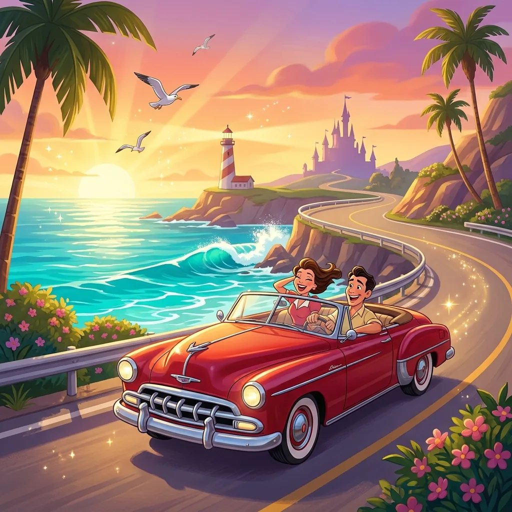
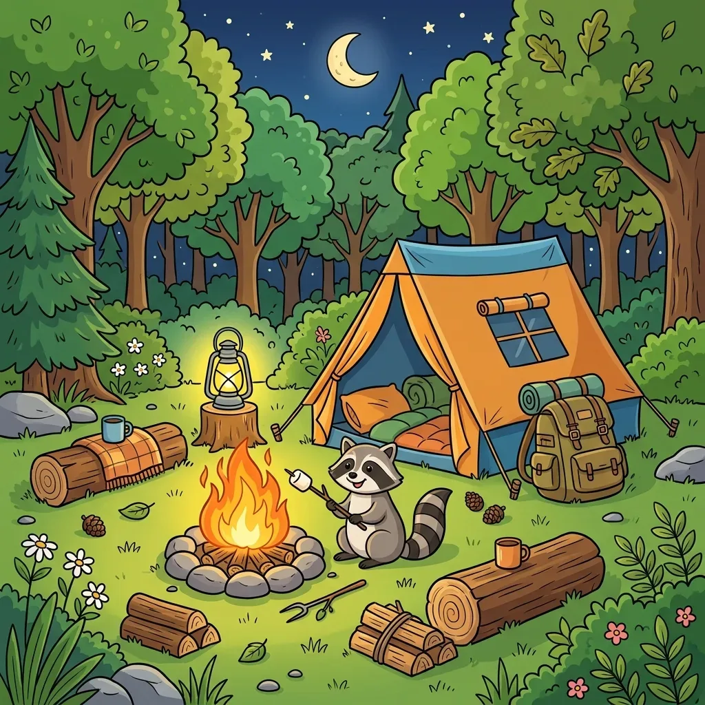

Road Trip Printable Games That Actually Work
Every "50 road trip activities for kids!" list includes at least thirty ideas that last ninety seconds. This list is shorter and honest: what each format really delivers in the back seat, how to prep it the night before, and how to stretch it when you're still four hours out.

The rankings
1. Spot-the-difference puzzles — 10 to 20 minutes each
The best minutes-per-sheet ratio of any printable, because the task has a defined finish line ("find all 8") and genuinely demands focus. Print a range of difficulties from our free generator — themes like ocean, space, and farm keep a stack varied — and bring one puzzle per hour of driving, per child. Clipboard, pencil, done. For two kids, print each puzzle twice and race.
2. Hidden-picture and search-and-find pages — 10–15 minutes
Same visual-hunt psychology, slightly less structured. Good as the "second course" after spot-the-difference pages run out.
3. License plate / spotting bingo — 30+ minutes, but intermittent
A background game rather than an activity: it resurfaces every few minutes for the whole trip. Print bingo cards with things you'll actually pass (red truck, cow, water tower, tunnel). One card per child, dabber or crayon, prize at destination.
4. Dot-to-dot (high count) — 8–12 minutes
Choose 100+ dots for school-age kids; the 1-to-25 versions are over before you've merged onto the highway.
5. Coloring pages — 5–20 minutes, wildly variable
Depends entirely on the child. Bring them, but don't build the plan around them. Colored pencils, never markers (upholstery) or crayons (they melt on the parcel shelf).
6. Mazes — 5–8 minutes
Fun but fast. Pack as filler between bigger items.
7. Tic-tac-toe / hangman grids — 5 minutes before someone flips the clipboard
Two-player paper games in a moving car end in dispute at a statistically remarkable rate. Emergency use only.
The night-before packing method
- One folder per child, name on the front — ownership prevents the #1 back-seat conflict.
- Order the folder hardest-first while attention is fresh: spot-the-difference on top, coloring at the back.
- A clipboard each (the dollar-store kind) — paper on a knee doesn't survive the first bend.
- Golf pencils, not pens. No caps to lose, no ink on seats, and they survive being dropped 400 times.
- Ration, don't dump. Hand out one sheet at a time; a whole folder at 9 a.m. is confetti by 9:20.
Answer-key trick: our PDFs print the answer page separately — keep the answer keys in the glovebox. "Are you SURE that's all 8? Check the tree." adds five more minutes per puzzle.

Unlimited free puzzles across six themes — each with its own answer key page.
Open the free generator